Introduction
Limfinity scripting enables the user to expand out-of-the-box Limfinity framework functionality. Below are a couple examples that can be done with scripting.
Getting Started
Any UI element in Limfinity can be configured with a script which will run before or after the UI element is clicked. The Ruby language is used to create scripts in Limfinity. Examples of this include:
- Creating objects after a button is clicked
- Running a search after a dialog is closed
- Setting default values
- Showing custom error messages
You can view all configured scripts in Limfinity by going to "Settings and Preferences" --> More Settings --> All Scripts
What is a User-Defined Field (UDF)?
User-Defined Fields (UDFs) make up the subjects in Limfinity. Each UDF corresponds to a subject property. There are many types of UDFs, each with its own corresponding value types. For example, a “Number” type UDF only supports the entering of numerical values, whereas a “Date” type UDF only supports date format values. UDFs are often set using scripts.
Values
Values in Limfinity are defined as the generic objects which are to be manipulated. Values can be user-defined fields, standard fields, names, and IDs.
What is a Subject?
A subject is a Limfinity object with defined fields and values. A subject can have any number of fields, including collections of other subjects. Subjects are the core objects in Limfinity which are manipulated and handled to store data. Subjects can be of any type which has been defined in the Limfinity system, and there is no limit to the number of subjects which can be created. Subjects store data in standard and user-defined fields, and progress through respective workflows.
Using subjects in scripting
“Subj” is a Limfinity term which refers to the currently opened subject. For example, when working with
a sample subject record, “subj” in a script in that record’s window will refer to that subject. Any get_value() calls will refer to the data within that subject.
Accessing Entered Values in a Form
# Populate the subject with values from a form, unless the value in the form is blank
params.each_pair{|udf, value|
if value.present?
subj.set_value(udf, value)
else
subj.remove_prop(udf)
end
}
It is sometimes necessary to get the value of a field object in a script for variable assignment or storage. When manipulating a subject in a script, the get_value() method is used. However if a script is being run without a subject object, for example when entering information into a form via a Quick Link, then the params[] call is used. The params[] call obtains the value which is entered into the form, respective to each field.
Parameters
# Using the params[:required] script will ensure that each UDF with a "true" parameter must have a value
# before the form can be submitted.
params[:required] = {
'Chem Analyses' => true,
'Chemistry Package' => true
}
Parameters are accessed in a similar way as fields with already set values. The standard syntax for obtaining a parameter’s information is params[‘FIELD NAME’]. This call is very useful when creating a subject. The params[] call may be used within a set_value() method call, where the parameter may be the value to set.
Exception Handling
# The raise method is used for exception handling, and is also good for debugging
# Here we raise the value of the "Sample Type" UDF of the opened subject to see its value in a new window
raise subj.get_value('Sample Type')
# Here we raise an error message if the value of the "PH Level" UDF is higher than 7
if subj.get_value('PH Level') >= 7
raise "PH level is too high"
end
Limfinity supports the Ruby “Raise” method, which is used for handling exceptions. When an exception (error) needs to be handled, the raise method is an excellent tool. When an exception is handled using the raise method, the script in Limfinity will cease running, and as a result no actions will have been performed.
The raise method can be used for exception handling, and for logic and value checking. In this example, an error message is thrown if the value of the subject’s “PH Level” is higher than 7.
Debugging
The inspect method can be called on a subject to provide output of a specified value inside a raise statement. This is equivalent to calling to_json on a Limfinity object.
The raise method can be used to break out of a script and display a message.
To troubleshoot an error thrown by Limfinity:
- Copy the error message out of the error dialog
- Go to
Settings and Preferences, chooseSystem Preferencesand click onVM Console Log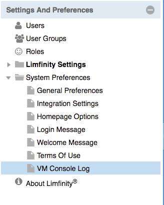 - Scroll to the bottom of the console log (the latest errors will show up on the bottom) 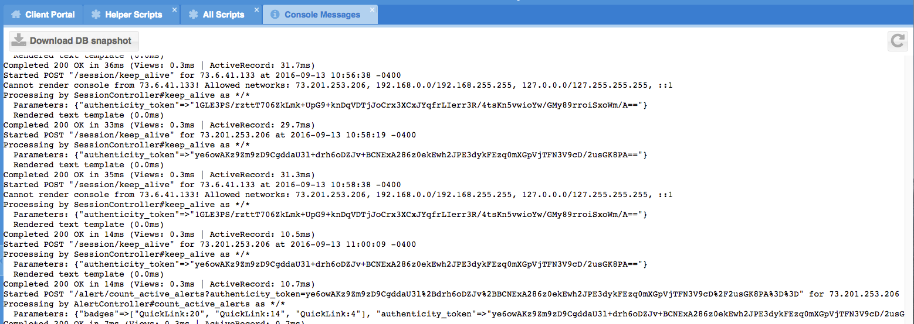
- If the error message is not at the bottom of the console log, click
Ctrl+Fto paste the copied error message into the search box - Once you have located the error message in the console log, take note of the line number and the script name where the error was originated. The stack trace accompanying the error will be shown below the error in the console log.
- Apply the fix to the script referenced in the console log and perform the action again.
Manipulating Subjects
Get Value
# In this example, a variable ‘age’ is set to the value of the subject’s “Age” user-defined field.
age = subj.get_value('Age')
# This subject is a "Testing Run". A testing run can have a sample, which can have its own information
# This call will obtain the value of the dilution of the sample within the testing run
dilution = subj.get_value('Sample').get_value('Dilution')
# The object 'Samples' is a collection of sample subjects, therefore it is stored in an array.
# A get_value() method call can be used to obtain teh collection of sample subjects.
samples = subj.get_value('Samples')
#For example, the destroy method will destroy the first sample (index) in the samples array,
# As designated by the [0]. Note that array indeces start at 0.
samples.[0].destroy
#Loops can also be used to perform actions on all elements in the array.
samples.each do |example|
example.destroy
end
Returns a value of a property.
Parameters
| Parameter | Description |
|---|---|
| property | The value of the property to retrieve |
It is possible to “chain” get_value() method calls for downstream objects. In this example, the value of a testing run’s sample’s dilution is obtained. There is no limit to the number of get_value() chains that may be called.
Arrays are collections of data, therefore the get_value() method call can be used to obtain the value of the collection.
Note that in order to perform any action on an element in the array, a loop must be used for a single index that must be defined
Set Value
# Example: Setting a single value
# Set_value takes two parameters. The first parameter is the value (Request Method), and the second is the intended value (Metagenomics).
# Here we set the request method for the subject to Metagenomics.
subj.set_value('Request Method', 'Metagenomics')
# Chaining get_value() to set_value()
# In this example, a subject has a reference subject called “First Analysis”. The “First Analysis” subject has a subject called “First Sample”.
# With this chained call, the “First Sample” subject is having its “Sample Name” UDF assigned the value of “Example”, even though that subject is not currently opened on the screen.
# set_value() can be chained together after a get_value()
# Here we get the field "First Sample" from the field of a referenced subject "First Analysis" of the opened subject,
# and set the value of that first sample's UDF "Sample Name" to "Example".
subj.get_value('First Analysis').get_value('First Sample').set_value("Sample Name", "Example")
# Looping set_value()
# Loops are very useful when it is necessary to set the value of a field for several subjects
# Here we get the array of analyses of this subject, loop through each one, and set the UDF value "Checked" to "Yes"
subj.get_value('Analyses').each do |analysis|
analysis.set_value('Checked?', 'Yes')
end
The set_value() method is used for setting the value of a subject’s or several subjects’ user-defined fields. The method accepts two parameters, the first of which is the field to be set, and the second of which is the intended value.
Parameters
| Parameter | Description |
|---|---|
| property | The intended property to be set |
| value | The intended value for the property |
Removing Values
# This example has the user select a Test Panel that will have all associated Lab Tests removed
panel = params['Select Panel to Clear Tests From']
panel.remove_prop('Lab Tests')
The remove_prop() method is used to clear the contents of user defined fields within a subject. The remove_prop() method is executed on the subject that calls the method. Note that the UDF is not permanently removed from the subject; remove_prop() method clears the value currently stored in the UDF for calling subject.
Parameters
| Parameter | Description |
|---|---|
| property | The value of the property to clear |
Naming Subjects
# Example: Overriding the Name of a Subject
# To set the name of a subject, an assignment operation can be used. Note that subject names must always be unique.
# Here we overwrite the name of the subject by appending the current date and time to it.
# Using the current date and time is a good way to ensure that the name of the subject remains unique.
subj.name = (subj.name + Time.now.to_s)
# Example: get_next_name_number
# Using the get_next_name_number is another way to ensure that a subject’s name remains unique. This method can be used when creating a subject or reassigning its name.
# Here we use the get_next_name_number method to ensure the subject's name is unique
"Sample " + '-' + ("%05d"% subject_type.get_next_name_number)
Subjects can be named in a variety of ways in Limfinity. For example, names can be generated via the subject type’s extension, or they can be set manually during a subject edit, or they may be modified using a simple assignment operation.
Creating Subjects
# Here we create a subject, and within a loop set a few of its UDF values
# Note that the UDF values are being set to the values which have been entered into the form by using the params[] objects
subject = create_subject('Job') do |jb|
jb.set_value('Client', params['Client'])
jb.set_value('# of Samples', params['# of Samples'])
end
# Here we call the create_subject method and create a subject of type "QC Sample"
# Using the open_subject() method call, the created subject will be opened.
subject = create_subject('QC Sample')
To create subjects via scripts in Limfinity, the create_subject() method is called. The create_subject() method is often called using a loop, so as to create multiple subjects, or to assign values to the subject which is being created.
It is often the intent to create a subject and immediately begin working on it, however the create_subject() method call only creates the subject. In order to open the subject to immediately view it and work with it after it has been created, the open_subject() method call is used.
Parameters
| Parameter | Description |
|---|---|
| subject_type | The subject type of which the subject is to be created. |
Deleting Subjects
# Here we delete each sample associated with the subject
subj.get_value(samples).each do |sample|
sample.destroy
end
To delete subjects in Limfinity, the destroy() method is used. Calling the destroy() method will delete the subject from the database. The associated information and user-defined field data will be deleted as well.
Copying Properties from Another Subject
# Here we create a new family, and copy the properties of it from an existing family (subject)
familyname = params['Family']
patient = create_subject('Patient') do |p|
p.set_value('Family', familyname)
p.set_value('UDP Inquiry', subj)
p.copy_properties_from(subj)
end
To copy properties from one subject to another, the copy_properties_from() method is used. This method is useful for duplicating subjects, and creating new subjects with existing data.
aside class="notice"> Copying properties works simply by taking a subject (user-defined field) and duplicating that data into another subject.
Guides
Modelling your data with Limfinity
This guide walks you through the process of replicating your data model with Limfinity. In this guide you'll learn how to:
- Create a new subject type
- Create a subject
- Create new user-defined-fields
- Configuring grid options for a subject
In the sections below, we'll create a "Patient" subject that will be linked to a "Sample.
Step 1: Create a new Subject Type
A Subject Type defines the type of data you can store. Think of it as a form, or a table.
Each subject type is annotated with user-defined fields (UDFs) that capture the metadata for that object. Each instance of a subject type is called a subject.
- Log in and click on Settings and Preferences
- Click on Subject Types
- Click the plus button to create a new Subject Type New Subject Type 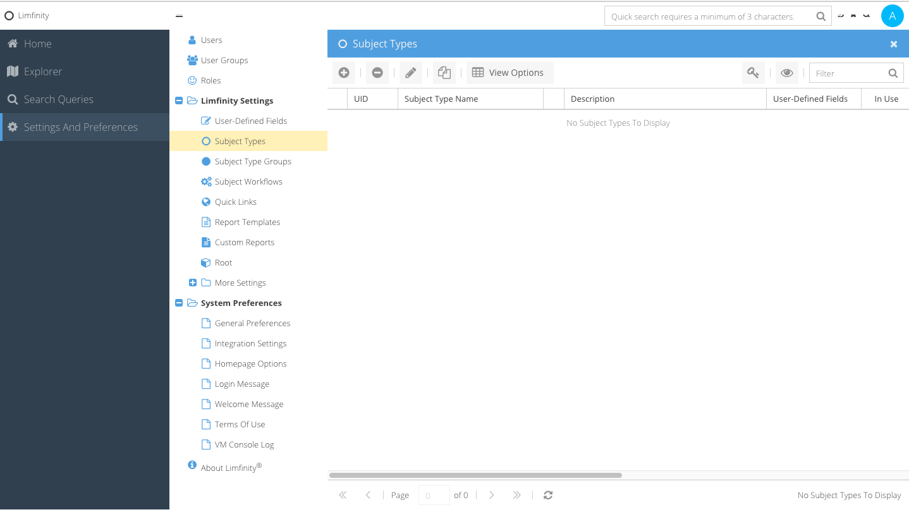
- Name your Subject Type "Patient" and specify the
Plural Name- Patients 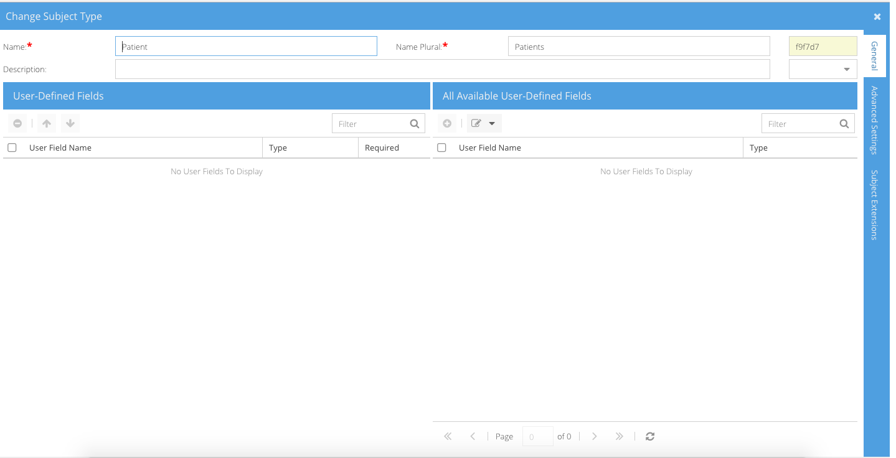 - Click OK to save
Step 2: Adding User-Defined-Fields to your Subject Type
Now we have a new "Patient" subject type, but it has no fields. Let's add a couple:
- Click on the "Patient" subject type
- Click on the
Add User Defined Fieldbutton and chooseDateas the field type - Enter "DOB" for the User Field Name and check
Advanced Search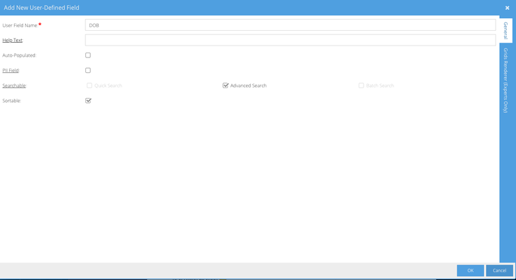 - Let's add a couple other fields: Phone Number (Text Field), Consent Signed (Checkbox), Gender (Choice - Male, Female, Both), Comments (Text Area)
- Click OK to Save
Let's also create another subject type and name it "Sample" with the field Amount (Numeric)
Step 3: Creating a subject
Our 'Patient' subject type has fields defined, but we do not yet have any actual patients.
Let's make a patient:
- Click on
Explorer - Click on Patients
- Click the plus button to add a new subject
- Enter values for DOB, Gender, Consent Signed, Phone number, Comments and click OK to save the new subject 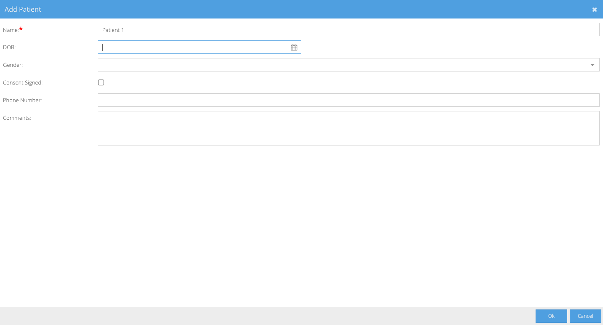
Configuring the subject type grid
Our newly added fields are not yet showing up on patient result grids. Let's configure the grid and add our new fields:
- Click on
Settings and Preferences - Click on
Subject Types - Select Patient and click
View Options - Add fields DOB, Gender, Phone Number, Consent Signed and Comments
- Remove the UID field
- Move the fields DOB, Gender, Phone Number and Consent Singed to the top and click OK 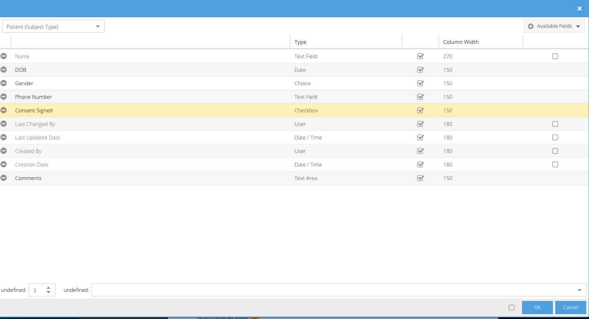
Creating workflows
This guide walks you through the process of creating a workflow. In this guide you will learn how to:
- Create a new new workflow
- Create workflow states
- Add tools to a workflow
- Take a subject through a workflow
In the sections below, we'll create an "Issue" workflow. Let's start by creating an "Issue" subject type with fields: Description (Text Area), Status (Choice), Assignee (User), Resolved Date (Date)
Step 1: Create a new Workflow
Each workflow can only be attached to one single subject type, but subject types can belong to multiple workflows. A workflow describes how subjects go through processes and what actions are available for each state
- Click on
Settings and Preferences - Click on the plus button and select the desired subject type ("Issue)
- Enter a name for the workflow. The convention is to name it the same as the subject type, so let's put in "Issue" as the worklfow name
- Click on the workflow to open it in the workflow editor window 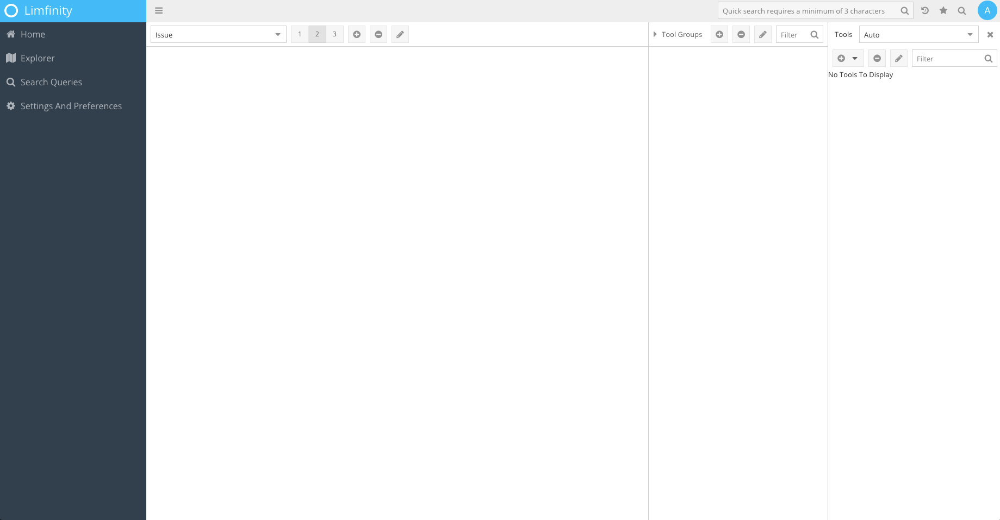
Step 2: Add states
We have a brand new "Issue" workflow, but it has no states. Each record in the workflow will go through a sequence of states that model the workflow.
For our "Issue" workflow, we know that it can either be "Open" or "Resolved".
1. Click on the plus button to add a new state
 2. Let's call the new state "Open". This new state will appear on the canvas. By default, this state will be the entry state for all new subjects in the "Issue" workflow, but you can always change the first state by specifying a new "Entry State" in workflow editor
3. Create another state called "Resolved"
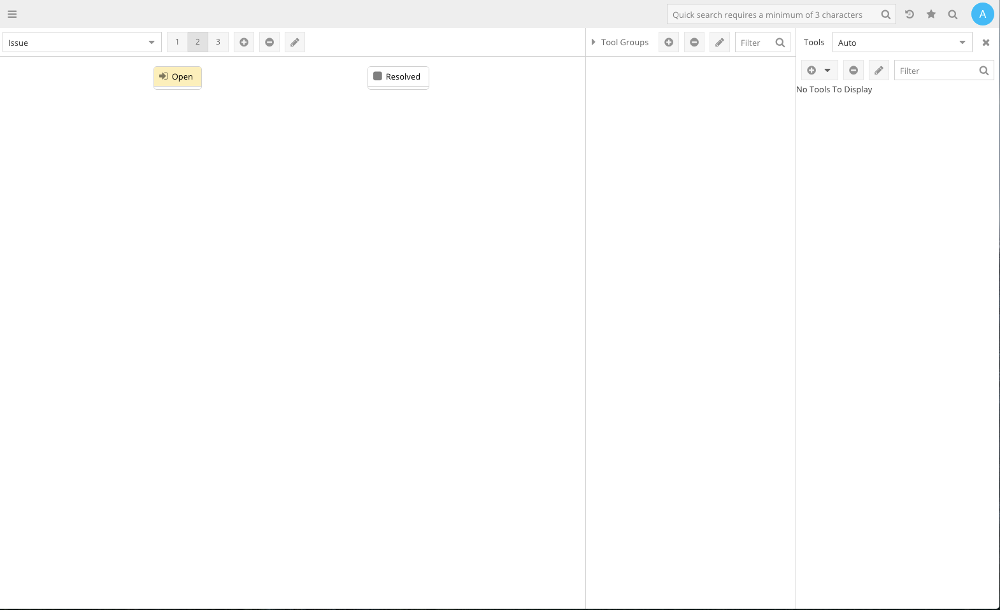
2. Let's call the new state "Open". This new state will appear on the canvas. By default, this state will be the entry state for all new subjects in the "Issue" workflow, but you can always change the first state by specifying a new "Entry State" in workflow editor
3. Create another state called "Resolved"
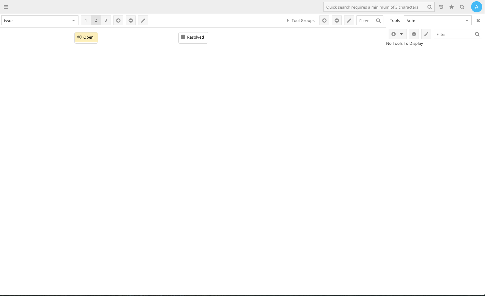
Step 3: Adding a workflow transition
Now that we have both "Open" and "Resolved" states, let's link it together. To do this, you will need to create a tool (it can be any type of tool)
1. Click on the plus button in the Tools tab
2. Give your tool a name, and a title. Name is the internal identifier, while Title is the user-facing value
3. Specify the Input Subject Type = Issue
4. Specify the Workflow Transition = Resolved
5. Drag the tool into the "Open" state
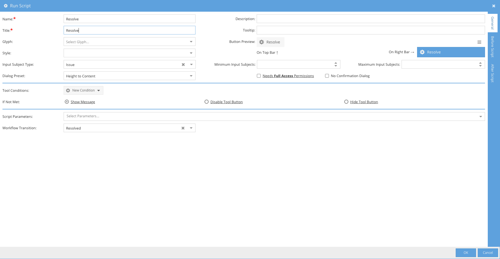
5. You should now see an arrow stretch the "Open" state to the "Resolved" state

Let's add another tool to create a new Issue
1. Create a Create New Subject tool and name it "New Issue"
2. Fill out the Name, Title, Output Subject Type, and Workflow
3. Click OK
Step 4: Adding tool groups
You can reuse individual tools or multiple tools in many workflows by placing them into tool groups. Tool groups can be reused in multiple places such as quicklinks or workflows
1. Click on the plus button in the Tool Groups tab
2. Fill out the Name = Issues and the Title = Issues fields
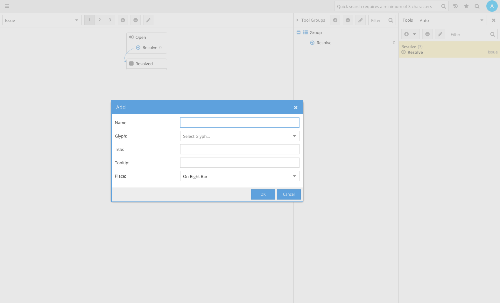
3. You can specify whether to display the tool group as a quick link, or as a set of buttons on the workflow state. Let's place it in the Quick Links bar
4. Add the "Resolve" and the "New Issue" tools to this tool group
4. Refresh to see a folder with the workflow tools
Step 5: Taking a subject record through a workflow
Let's take an Issue from being open to resolution:
- Click on
Explorer. and selectIssues - Click
New Issue - A dialog for the new issue record should open

- Upon saving, you should see a "Resolve" button on the record